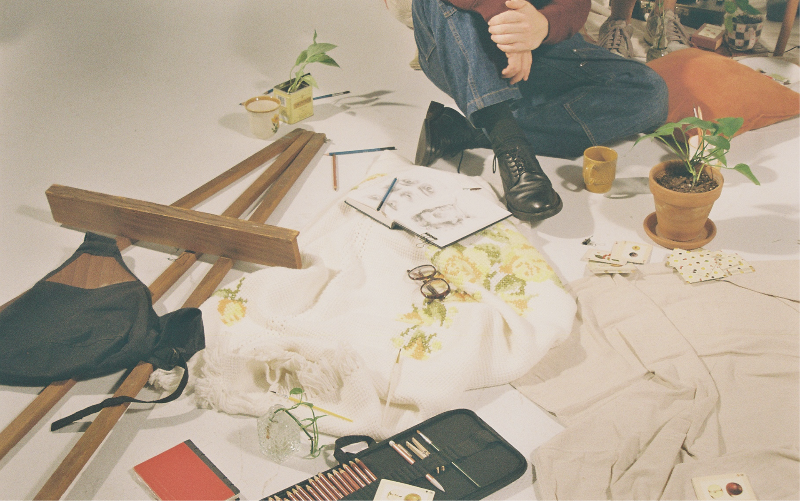
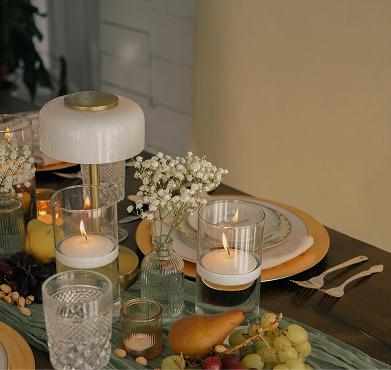
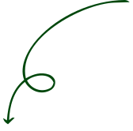

Services
Idio is a full-service creative agency.
We walk you through the entire process of branding, marketing, content creation and development, as well as management.



We walk you through the entire process of branding, marketing, content creation and development, as well as management.

